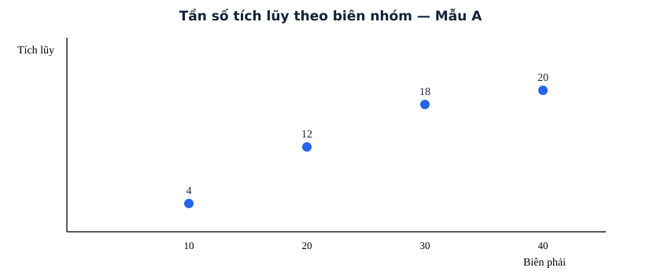
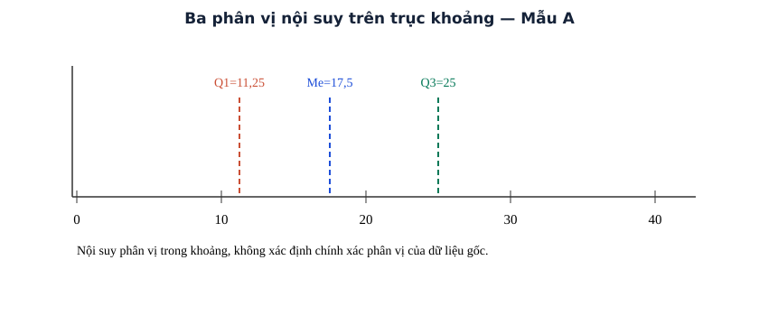

Bài 9. Các số đặc trưng đo xu thế trung tâm
TOÁN 11 · CHƯƠNG III · KẾT NỐI TRI THỨC
Từ bảng nhóm không còn số đo gốc, tìm các giá trị trung tâm ước lượng và hiểu điều kiện, giới hạn của mỗi công thức.
1. Khám phá kiến thức
Ở Bài 8, một bảng có thể cho biết 20 bạn thuộc bốn khoảng thời gian, nhưng không còn cho biết từng người đã dùng chính xác bao nhiêu phút. SGK Bài 9 đặt câu hỏi tương tự với số tiền bán xăng của 35 khách hàng: nếu chỉ còn nhóm và số lượng khách trong nhóm, làm thế nào ước lượng giá trị trung bình, vị trí chia đôi, các mốc chia tư, hoặc giá trị tập trung nhất? Ta sẽ lần lượt khám phá đúng bốn mục của SGK. Những con số tính được là đặc trưng từ bảng ghép nhóm, không tự động là đặc trưng chính xác của mẫu gốc.
Để dễ so sánh bốn cách tính, ta dùng xuyên suốt một bảng minh họa A của 20 số đo (đơn vị tính là phút):
| Nhóm giá trị | \([0;10)\) | \([10;20)\) | \([20;30)\) | \([30;40)\) |
|---|---|---|---|---|
| Tần số | 4 | 8 | 6 | 2 |
1.1. Số trung bình của mẫu số liệu ghép nhóm
Nếu còn dữ liệu gốc, ta cộng tất cả 20 số đo rồi chia cho 20. Nhưng bảng A chỉ nói bốn bạn ở khoảng 0–dưới 10, chứ không nói bốn bạn ấy là ai và chính xác bao nhiêu. Để có một kết quả đại diện hợp lí, ta dùng trung điểm mỗi khoảng: \(5,15,25,35\). Hình dung tạm thời bốn giá trị trong nhóm đầu được thay bằng \(5\), tám giá trị nhóm thứ hai được thay bằng \(15\), v.v. Đây là phép xấp xỉ, không phải khẳng định về từng người.
Khi ấy tổng ước lượng là \(4\cdot5+8\cdot15+6\cdot25+2\cdot35=360\), nên số trung bình ghép nhóm là \(\bar x=360/20=18\) phút. Ta phải nhân mỗi trung điểm với tần số nhóm rồi chia tổng tần số \(20\), chứ không lấy \((5+15+25+35)/4\), vì các nhóm chứa số người khác nhau.
SGK còn lưu ý một trường hợp đặc biệt: khi nhóm các số nguyên ghi là “1–3”, đó là ba giá trị \(1,2,3\). Để tính bằng công thức khoảng liên tục, ta hiệu chỉnh thành \([0{,}5;3{,}5)\) để trung điểm vẫn bằng \(2\) và hai nhóm liên tiếp không bị hở hay chồng tại các giá trị nguyên. Nếu nhóm chỉ có một đầu mút, không tự tạo trung điểm hữu hạn khi không có căn cứ.
Vận dụng. Bảng A có \(\bar x=18\) phút. Nếu bạn chỉ tính trung bình của bốn trung điểm thì được bao nhiêu? Vì sao kết quả đó không đúng với công thức số trung bình ghép nhóm?
Đối chiếu
Lời giải: Trung bình đơn của bốn trung điểm là \((5+15+25+35)/4=20\) phút. Kết quả đó coi bốn nhóm có cùng tần số, trái bảng \(4,8,6,2\). Phải dùng trung bình có trọng số và nhận \(18\) phút.
Kiểm lỗi
Nếu tính được 20, hãy ghi tần số ngay dưới từng trung điểm và tự hỏi: “một người hay tám người đang được đại diện bởi số 15?” Số trung bình là kết quả xấp xỉ, không nhận là trung bình gốc chính xác.
1.2. Trung vị của mẫu số liệu ghép nhóm
Số trung bình dùng mọi nhóm, nhưng có khi ta chỉ muốn biết ranh giới để khoảng một nửa dữ liệu ở phía trước, nửa kia ở phía sau. Đó là ý nghĩa của trung vị. Nếu có đủ 20 quan sát đã xếp theo thứ tự, trung vị gốc là trung bình của số đo thứ 10 và thứ 11. Với bảng ghép nhóm, ta dùng mốc tần số tích lũy \(n/2=10\) để ước lượng trung vị. Từ bảng A, cộng tần số lần lượt được \(4,\ 12,\ 18,\ 20\). Vậy vị trí thứ 10 nằm ở nhóm thứ hai \([10;20)\).

Ta không biết chính xác hai số đo giữa; vì thế nội suy trong nhóm. Tần số tích lũy ở đầu nhóm là 4, ở cuối nhóm là 12. Giả sử tần số tích lũy tăng đều trong khoảng dài 10 phút, để đạt mốc 10 ta cần thêm \(10-4=6\) trên tổng tần số 8 của nhóm. Vì vậy khoảng từ đầu nhóm đến trung vị được ước lượng bằng \(6/8\) độ dài nhóm. Vậy \(M_e=10+(10-4)\cdot10/8=17{,}5\) phút. Đây là trung vị ghép nhóm, không nhất thiết bằng trung vị tính từ dữ liệu gốc.
Vận dụng. Với bảng A, nếu ai đó lấy ngay trung điểm nhóm chứa vị trí 10 là \(15\) làm trung vị thì đã bỏ bước nào?
Đối chiếu
Lời giải: Họ bỏ bước nội suy theo tần số tích lũy trước nhóm. Dùng \(L=10,\ C=4,\ m=8,\ h=10,\ n=20\), ta được \(M_e=10+[(10-4)/8]\cdot10=17{,}5\), khác trung điểm \(15\).
Kiểm lỗi
Trước khi thay công thức, kiểm ba điều: vị trí \(n/2\), tổng tần số trước nhóm và độ rộng nhóm. Không mặc định trung vị chính là trung điểm của khoảng.
1.3. Tứ phân vị của mẫu số liệu ghép nhóm
Trung vị chia mẫu thành hai nửa. Nếu muốn chia tiếp thành bốn phần có tỉ lệ xấp xỉ bằng nhau, ta cần \(Q_1,Q_2,Q_3\), ứng với các vị trí \(n/4,\ n/2,\ 3n/4\) trong mẫu đã sắp xếp. \(Q_2\) chính là trung vị vừa tính. Với bảng A có \(n=20\), ba vị trí mục tiêu là \(5,\ 10,\ 15\).
Quan sát dãy tích lũy \(4,12,18,20\): vị trí \(5\) nằm trong nhóm hai, vị trí \(15\) nằm trong nhóm ba. Vì vậy \(Q_1=10+[(5-4)/8]\cdot10=11{,}25\), còn \(Q_3=20+[(15-12)/6]\cdot10=25\). Các mốc ước lượng của bảng A là \(11{,}25;\ 17{,}5;\ 25\) phút.

Nếu vị trí \(n/4\) hoặc \(3n/4\) rơi đúng vào tần số tích lũy ở ranh giới hai nhóm, nếu hai nhóm kề đều có tần số dương thì nội suy theo cả hai phía sẽ cho cùng mốc biên. Không tự cộng thêm 1 hay trừ đi 1 đơn vị: điểm chia nhóm là biên giá trị, không phải một số thứ tự học sinh.
Vận dụng. Bảng B có các nhóm như bảng A nhưng tần số lần lượt là \(2,6,8,4\). Xác định nhóm chứa \(Q_1,Q_3\) rồi ước lượng hai tứ phân vị này.
Đối chiếu
Lời giải: \(n=20\), tần số tích lũy lần lượt là \(2,8,16,20\). Mốc \(n/4=5\) thuộc \([10;20)\), nên \(Q_1=10+(5-2)10/6=15\). Mốc \(3n/4=15\) thuộc \([20;30)\), nên \(Q_3=20+(15-8)10/8=28{,}75\).
Kiểm lỗi
Nếu lấy \(Q_1\) bằng 5 hoặc \(Q_3\) bằng 15, em đã nhầm vị trí thứ tự với giá trị tứ phân vị. Phải tìm nhóm chứa vị trí rồi mới nội suy ra giá trị đo.
1.4. Mốt của mẫu số liệu ghép nhóm
Còn một câu hỏi khác: quan sát có xu hướng tập trung dày nhất ở vùng nào? Nhìn bảng A, nhóm \([10;20)\) có 8 người, nhiều nhất trong bốn nhóm, nên là nhóm chứa mốt. Nhưng mốt của mẫu số liệu ghép nhóm không đơn giản là trung điểm 15 của nhóm ấy. SGK dùng hai chênh lệch tần số với nhóm lân cận để ước lượng một vị trí bên trong nhóm.
Ở đây nhóm trước có 4, nhóm sau có 6. Chênh với nhóm trước là \(8-4=4\), chênh với nhóm sau là \(8-6=2\). Nội suy cho \(M_o=10+\frac4{4+2}\cdot10\approx16{,}67\) phút. Đây là mốt ước lượng từ bảng, không có nghĩa đã có người thực sự đo đúng \(16{,}67\) phút.
Điểm cực kì quan trọng là công thức mốt này được SGK định nghĩa cho các nhóm có độ dài bằng nhau. Nếu chia các nhóm rộng 5, 15 và 10 rồi áp trực tiếp công thức trên, ta đã bỏ mất điều kiện nguồn. Nếu mọi tần số bằng nhau, theo SGK mẫu ghép nhóm không có mốt; với các đỉnh tần số bằng nhau ở nhiều nhóm, có thể có nhiều hơn một mốt, không được ép một giá trị duy nhất.
Vận dụng. Với bảng B ở bài tự thử trước (tần số \(2,6,8,4\), các nhóm cùng rộng 10), hãy xác định nhóm chứa mốt và ước lượng \(M_o\). Có thể dùng nguyên công thức nếu độ rộng các nhóm khác nhau không?
Đối chiếu
Lời giải: Nhóm chứa mốt là \([20;30)\), vì tần số \(8\) lớn nhất. \(M_o=20+\frac{8-6}{(8-6)+(8-4)}\cdot10=20+\frac{10}3\approx23{,}33\) phút. Nếu nhóm khác độ rộng, không dùng trực tiếp công thức này theo điều kiện SGK.
Kiểm lỗi
Đừng so sánh mốt với số đo gốc khi chỉ có bảng nhóm. Kiểm nhóm rộng bằng nhau, tần số nhóm trước/sau và mẫu số của phép nội suy trước khi kết luận.
2. Kiến thức SGK
Bảng A — Thời gian đi học (phút) của 20 học sinh
| Nhóm giá trị | \([0;10)\) | \([10;20)\) | \([20;30)\) | \([30;40)\) |
|---|---|---|---|---|
| Tần số | 4 | 8 | 6 | 2 |
2.1. Số trung bình của mẫu số liệu ghép nhóm
Với nhóm \([a_i;a_{i+1})\) có hai đầu mút hữu hạn, giá trị đại diện là trung điểm \(x_i=(a_i+a_{i+1})/2\). Đây là số thay thế để ước lượng, không khẳng định mọi quan sát trong nhóm có giá trị \(x_i\).
Với các nhóm có tần số \(m_1,\ldots,m_k\), cỡ mẫu \(n=m_1+\cdots+m_k>0\) và giá trị đại diện \(x_i\), số trung bình ghép nhóm là \(\displaystyle\bar x=\frac{m_1x_1+\cdots+m_kx_k}{n}\).
Đơn vị của \(\bar x\) giống đơn vị số liệu gốc; đây là ước lượng cho số trung bình mẫu gốc.
Chú ý SGK về dữ liệu rời rạc: Nhóm gồm các số nguyên từ \(k_1\) đến \(k_2\) được hiệu chỉnh thành \([k_1-0{,}5;k_2+0{,}5)\) trước khi dùng công thức khoảng; chẳng hạn nhóm số nguyên “1–3” thành \([0{,}5;3{,}5)\). Không tự tính trung điểm hữu hạn cho nhóm mở một phía.
Tra bảng A: Các trung điểm \(5,15,25,35\), tần số \(4,8,6,2\) cho \(\bar x=18\) phút; không dùng trung bình đơn của bốn trung điểm.
2.2. Trung vị của mẫu số liệu ghép nhóm
Bước 1: tính cỡ mẫu \(n\), tần số tích lũy và xác định nhóm \(p\) chứa vị trí \(n/2\) của mẫu xếp tăng dần.
Bước 2: nội suy trong nhóm đã chọn từ đầu mút trái, tần số tích lũy trước nhóm, tần số nhóm và độ dài nhóm; không thay ngay bằng trung điểm nhóm.
Gọi nhóm chứa trung vị là \([L;U)\), tần số nhóm \(m>0\), tổng tần số các nhóm trước là \(C\) (nhóm đầu có \(C=0\)), độ dài \(h=U-L>0\). Khi đó \(M_e=L+\dfrac{n/2-C}{m}\,h\).
Phải chọn nhóm sao cho vị trí \(n/2\) nằm trong khoảng tích lũy tương ứng. Kết quả xấp xỉ trung vị mẫu gốc và phụ thuộc giả thiết nội suy.
Ý nghĩa SGK: Trung vị ghép nhóm xấp xỉ vị trí chia đôi mẫu; không tự thay bằng một giá trị đo thực tế.
2.3. Tứ phân vị của mẫu số liệu ghép nhóm
Với vị trí mục tiêu \(v=n/4\) hoặc \(v=3n/4\), hãy xác định nhóm chứa vị trí ấy; gọi đầu mút trái \(L\), tần số trước nhóm \(C\), tần số nhóm \(m>0\), độ dài \(h>0\). Khi đó \(Q_1=L+\dfrac{n/4-C}{m}h\) và \(Q_3=L+\dfrac{3n/4-C}{m}h\), mỗi công thức dùng \(L,C,m,h\) của đúng nhóm chứa phân vị tương ứng.
\(Q_2=M_e\) là trung vị ghép nhóm.
Ý nghĩa SGK: Ba tứ phân vị chia mẫu được ước lượng thành bốn phần, mỗi phần khoảng \(25\%\). Trước khi nội suy, phải tìm nhóm cho từng vị trí \(n/4,\,n/2,\,3n/4\) bằng tần số tích lũy. Với vị trí rơi đúng biên, nếu cả hai nhóm kề đều có tần số dương thì hai cách chọn nhóm cho cùng một giá trị biên. Không chia cho tần số 0.
2.4. Mốt của mẫu số liệu ghép nhóm
Điều kiện: các nhóm có độ dài bằng nhau. Bước 1: chọn nhóm có tần số lớn nhất (nhóm chứa mốt). Bước 2: dùng chênh lệch tần số của nhóm ấy so với hai nhóm kề để nội suy mốt; tần số ngoài hai biên được quy ước bằng \(0\).
Nếu nhóm chứa mốt thứ \(j\) có đầu mút trái \(L\), độ dài chung \(h>0\), tần số \(m_j\) và hai nhóm kề tần số \(m_{j-1},m_{j+1}\), thì \(M_o=L+\dfrac{m_j-m_{j-1}}{(m_j-m_{j-1})+(m_j-m_{j+1})}\,h\), với mẫu khác \(0\).
Quy ước \(m_0=m_{k+1}=0\). Nếu các nhóm có độ dài không bằng nhau, không áp trực tiếp công thức này. Khi các nhóm có tần số đều bằng nhau, SGK quy định bảng không có mốt; có thể có nhiều hơn một mốt trong các tình huống nhiều đỉnh.
Tra bảng A: Nhóm chứa mốt \([10;20)\) có \(m_j=8\), các nhóm kề là \(4\) và \(6\), \(h=10\), nên \(M_o\approx16{,}67\) phút. Đó là ước lượng mốt từ nhóm, không có nghĩa là có người đi đúng từng ấy phút.
3. Ví dụ
3.1. Tính số trung bình có trọng số
Đề bài. Bốn nhóm \([0;10),[10;20),[20;30),[30;40)\) có tần số \(4,10,5,1\). Tìm số trung bình ghép nhóm.
Phân tích: Dùng trung điểm nhóm làm giá trị đại diện và nhân tần số tương ứng.
Lời giải. Các giá trị đại diện là \(5,15,25,35\), cỡ mẫu \(20\). \(\bar x=(4\cdot5+10\cdot15+5\cdot25+1\cdot35)/20=330/20=16{,}5\).
Kiểm lại: Trung bình có trọng số \(16{,}5\) nằm trong khoảng chung từ \(0\) đến dưới \(40\), khác trung bình đơn \(20\).
3.2. Tìm trung vị từ tần số tích lũy
Đề bài. Bốn nhóm \([0;10),[10;20),[20;30),[30;40)\) có tần số \(4,10,5,1\). Ước lượng trung vị.
Phân tích: Tìm nhóm chứa vị trí \(n/2\) bằng tần số tích lũy, rồi nội suy.
Lời giải. \(n=20,\ n/2=10\), tích lũy \(4,14,19,20\). Nhóm chứa trung vị là \([10;20)\), \(L=10,C=4,m=10,h=10\). \(M_e=10+(10-4)\cdot10/10=16\).
Kiểm lại: \(16\in[10;20)\), đúng nhóm chứa trung vị.
3.3. Hai tứ phân vị ở hai nhóm khác nhau
Đề bài. Bốn nhóm \([0;10),[10;20),[20;30),[30;40)\) có tần số \(4,10,5,1\). Tìm \(Q_1,Q_3\).
Phân tích: Tính hai vị trí \(n/4=5\) và \(3n/4=15\). Tần số tích lũy là \(4,14,19,20\); xác định nhóm riêng cho từng vị trí.
Lời giải. Vị trí \(5\) thuộc \([10;20)\): \(Q_1=10+(5-4)\cdot10/10=11\). Vị trí \(15\) thuộc \([20;30)\): \(Q_3=20+(15-14)\cdot10/5=22\).
Kiểm lại: \(Q_1\le M_e\le Q_3\), tức \(11\le16\le22\).
3.4. Mốt khác trung điểm nhóm có tần số lớn nhất
Đề bài. Bốn nhóm \([0;10),[10;20),[20;30),[30;40)\) có tần số \(4,10,5,1\). Tìm mốt ghép nhóm.
Phân tích: Các nhóm cùng rộng \(10\), nhóm tần số lớn nhất là \([10;20)\) có \(m_j=10\). Dùng chênh lệch với hai tần số kề.
Lời giải. \(M_o=10+\dfrac{10-4}{(10-4)+(10-5)}\cdot10=10+\dfrac{60}{11}\approx15{,}45\).
Kiểm lại: Mốt ước lượng thuộc \([10;20)\). Không dùng trực tiếp công thức này khi các nhóm có độ rộng khác nhau.
3.5. Hiệu chỉnh nhóm số liệu rời rạc
Đề bài. Hai nhóm số nguyên “1–3” và “4–6” có tần số lần lượt \(2\) và \(4\). Tính số trung bình ghép nhóm sau khi hiệu chỉnh khoảng.
Phân tích: Mỗi nhóm ghi các số nguyên ở cả hai đầu mút, nên phải hiệu chỉnh thành khoảng liên tục không chồng lấn theo chú ý SGK.
Lời giải. “1–3” thành \([0{,}5;3{,}5)\), đại diện \(2\); “4–6” thành \([3{,}5;6{,}5)\), đại diện \(5\). \(\bar x=(2\cdot2+4\cdot5)/(2+4)=24/6=4\).
Kiểm lại: Các nhóm hiệu chỉnh không bỏ các số nguyên 1 đến 6 và trung điểm vẫn bằng giữa các mốc nguyên gốc.
3.6. Phân vị rơi đúng ranh giới hai nhóm
Đề bài. Bốn nhóm \([40;50),[50;60),[60;70),[70;80)\) có tần số \(2,5,8,5\). Tìm \(Q_3\).
Phân tích: \(n=20\), vị trí \(3n/4=15\) trùng đúng tần số tích lũy ở cuối nhóm thứ ba, nên kết quả phải là biên chung \(70\), không cộng thêm một đơn vị.
Lời giải. Tích lũy \(2,7,15,20\). Từ nhóm thứ ba \(L=60,C=7,m=8,h=10\): \(Q_3=60+(15-7)\cdot10/8=70\). Từ nhóm thứ tư \(L=70,C=15,m=5,h=10\): \(Q_3=70+(15-15)\cdot10/5=70\).
Kiểm lại: Hai phép nội suy thống nhất cùng một biên \(70\); không thêm/bớt vị trí.
3.7. Không suy ra đặc trưng gốc chính xác từ bảng nhóm
Đề bài. Hai tổ có các mẫu A \(11,12,13\) và B \(17,18,19\); nếu cùng ghép tất cả vào \([10;20)\), có thể nói hai trung bình gốc bằng nhau không?
Phân tích: Hai bảng nhóm giống nhau nhưng các giá trị trong nhóm khác nhau; dùng ví dụ để tự kiểm giới hạn suy luận.
Lời giải. Hai bảng đều có một nhóm \([10;20)\) tần số \(3\), giá trị đại diện \(15\), số trung bình ghép nhóm bằng \(15\). Nhưng trung bình gốc của A là \(12\), B là \(18\), nên không thể khẳng định các đặc trưng gốc bằng nhau.
Kiểm lại: Cả sáu giá trị đều nằm trong nhóm, còn hai trung bình thực khác nhau.
4. Lỗi thường gặp và cách tự khắc phục
Mở từng mục để xem dấu hiệu, vì sao sai và cách sửa.
4.1. Lấy trung bình các trung điểm mà quên tần số
Dấu hiệu: Với bảng A, tính \((5+15+25+35)/4=20\).
Vì sao sai: Các nhóm không có cùng tần số; trung điểm phải được nhân số quan sát tương ứng.
Cách sửa: Ghi một hàng tần số ngay dưới một hàng đại diện, tính \(\sum m_ix_i/\sum m_i=18\).
4.2. Xác định sai nhóm chứa trung vị hoặc tứ phân vị
Dấu hiệu: Lấy trung vị bằng trung điểm 15 của nhóm thứ hai, hoặc nói \(Q_3=15\) vì \(3n/4=15\).
Vì sao sai: \(n/2,n/4,3n/4\) là vị trí trong thứ tự, không phải giá trị đo.
Cách sửa: Lập tích lũy, xác định đúng nhóm, rồi nội suy bằng \(L,C,m,h\) của từng phân vị.
4.3. Nhầm nội suy là kết quả chính xác của dữ liệu thô
Dấu hiệu: Khẳng định mọi bộ dữ liệu có bảng A đều có trung vị chính xác \(17{,}5\).
Vì sao sai: Nhiều bộ dữ liệu khác nhau có cùng bảng nhóm; nội suy chỉ dùng thông tin khoảng/tần số.
Cách sửa: Dùng từ “xấp xỉ”, “ước lượng”; nếu có số liệu gốc thì mới tính đặc trưng gốc đúng quy tắc của mẫu thô.
4.4. Lạm dụng công thức mốt với nhóm không đều rộng
Dấu hiệu: Dùng công thức \(M_o\) ở mục 2.4 cho các khoảng dài 5, 15, 10.
Vì sao sai: SGK chỉ định nghĩa công thức mốt ghép nhóm trong trường hợp các nhóm có độ dài bằng nhau.
Cách sửa: Kiểm độ dài từng nhóm trước; nếu không đều, không dùng trực tiếp công thức mốt SGK. Nếu tất cả tần số bằng nhau, theo SGK không có mốt.
4.5. Bỏ bước hiệu chỉnh nhóm giá trị nguyên
Dấu hiệu: Với nhóm “1–3” và “4–6”, dùng khoảng \([1;3)\), \([4;6)\) rồi làm mất số nguyên 3 và 6.
Vì sao sai: Kí hiệu nhóm 1–3 của dữ liệu rời rạc nhận cả \(1,2,3\), không giống nửa khoảng thực.
Cách sửa: Hiệu chỉnh thành \([0{,}5;3{,}5)\), \([3{,}5;6{,}5)\) rồi tính đại diện/đặc trưng.
4.6. Mất đơn vị và bỏ điều kiện đầu mút
Dấu hiệu: Kết luận “trung vị là \(17{,}5\) học sinh” khi bảng đang đo phút, hoặc chọn \(Q_3\) bằng \(71\) khi đúng ranh giới \(70\).
Vì sao sai: Đặc trưng có cùng đơn vị với giá trị đo, và biên nội suy là giá trị trên trục số chứ không phải chỉ số đếm.
Cách sửa: Ghi đơn vị sau kết quả, tự kiểm mốc nhóm và vị trí tích lũy; không tự dịch điểm biên.
Học tiếp: Core và Luyện tập Bài 9 · Tự luận Chương III · Tự kiểm tra cuối chương.
Nguồn SGK Kết nối tri thức Toán 11 tập một, Bài 9 trang in 62–67, đối chiếu văn bản bản PDF số hóa nội dung SGK theo mục: Số trung bình; Trung vị; Tứ phân vị; Mốt. Hình tích lũy và phân vị SVG dùng chung ở hai tab. Chưa xác nhận đã kiểm trực quan đủ mọi trang in do screenshot web không tải được.